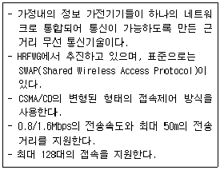
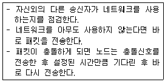

네트워크관리사-2급 (2011-10-23 기출문제)
1과목: TCP/IP
1. 사용자가 원격지의 파일 시스템을 자신의 로컬 파일 시스템처럼 사용할 수 있도록 하는 기능을 제공하여 원격지 호스트의 디렉터리나 파일의 내용을 살펴볼 수 있으며 원격지의 파일을 내 컴퓨터로 다운로드할 수 있게 하는 프로토콜은?
- Telnet
- HTTP
- FTP
- Gopher
(정답률: 61%)

2. 아래에서 설명하는 네트워크 방식은 무엇인가?

- HomeRF
- Bluetooth
- IEEE 802.11b
- IEEE 1294
(정답률: 79%)
3. IPv4에 대한 설명으로 올바른 것은?
- 정확하게 두 개의 Class로 나누어진다.
- 고정된 길이의 HostID를 갖는다.
- 한 바이트씩 점(.)으로 분리하여 16진수로 나타낸다.
- 길이가 32비트이다.
(정답률: 83%)
4. 전력선 통신(PLC) 기술의 특징에 대한 설명으로 옳지 않은 것은?
- PLC 기술은 추가적으로 새로운 케이블 설치가 필요 없다.
- 홈네트워킹 시장을 지원하는 기술로 설치가 용이하다.
- 변압기에 연결된 사용자수에 거의 영향을 받지 않는다.
- 전력선을 매체로 통신하기 때문에 통신용 케이블이나 광섬유에 비해 구현이 어렵다.
(정답률: 68%)
5. IP 계층의 프로토콜로 옳지 않은 것은?
- ICMP
- IP
- SMTP
- ARP
(정답률: 73%)
6. USB(Universal Serial Bus) 네트워크의 장단점에 대한 설명이다. 옳지 않은 것은?
- USB는 HDMI(High Definition Multimedia Interface)로서의 특성과 주변 장치와의 용의한 연결이 장점이다.
- USB는 PNP(Plug and Play)기능이 지원된다.
- USB는 낮은 전력 공급원을 지원하기 때문에 소비전력이 높은 장치의 경우 독립적인 전원공급 장치가 추가적으로 필요하다.
- USB는 구조상의 문제로 PC와 같이 중앙에서 데이터 흐름을 처리해주어야 하는 기기가 필요하다.
(정답률: 45%)
7. ICMP 메시지가 사용되는 경우에 대한 설명으로 옳지 않은 것은?
- 라우터나 호스트 간의 제어 또는 오류정보를 주고받을 경우
- 호스트나 라우터가 IP 헤더의 문법 오류를 발견한 경우
- 호스트의 IP가 중복된 경우
- 라우터가 데이터를 전달할 수 없는 경우
(정답률: 76%)
8. 인터넷의 Well-Known Port로 옳지 않은 것은?
- TFTP : 68
- FTP : 21
- Telnet : 23
- Finger : 79
(정답률: 71%)
9. IGMP에 대한 설명으로 올바른 것은?
- 다중 전송을 위한 프로토콜이다.
- 네트워크 간의 IP 정보를 물리적 주소로 매핑한다.
- 하나의 메시지는 하나의 호스트에 전송된다.
- TTL(Time To Live)이 제공되지 않는다.
(정답률: 83%)
10. 인터넷 메일 호스트 사이에 아스키 형식(ASCII Format) 이외의 텍스트 및 화상이나 음성, 영상 등의 멀티미디어 데이터를 아스키 형식으로 변환할 필요 없이 인터넷 전자우편으로 송신하기 위한 인터넷 표준은?
- SMTP
- MIME
- IMAP
- POP
(정답률: 61%)
11. 원격지의 호스트에 연결하여 접속하려할 때 이용할 수 있는 서비스는?
- SNMP
- ICMP
- POP3
- Telnet
(정답률: 88%)
12. SNMP에 대한 설명 중 옳지 않은 것은?
- UDP 상에서 작동한다.
- 비동기식 요청/응답 메시지 프로토콜이다.
- 4가지 기능(Get, Get Next, Set, Trap)을 수행한다.
- E-Mail을 주고받기 위해 사용되는 프로토콜이다.
(정답률: 81%)
13. SSH의 핵심 기능으로 옳지 않은 것은?
- 안전한 명령 해석기
- 안전한 파일 전송
- 안전한 포트 포워딩
- 안전한 데이터 저장
(정답률: 48%)
14. UA가 생성한 메일의 여러 부분 중에서 송신자와 수신자 주소를 포함하고 있는 부분은?
- Envelope
- Message
- Header
- Body
(정답률: 45%)
15. HTTP/1.0에서 정의하는 공통 메서드(Method)가 아닌 것은?
- GET 메서드
- HEAD 메서드
- WRITE 메서드
- POST 메서드
(정답률: 59%)
16. 'network@icqa.or.kr'이라는 전자우편 주소를 가진 사람이 웹을 이용하여 자신의 홈 디렉터리에 파일을 업로드하려고 할 때, 올바른 URL을 사용한 예는?
- ftp://icpa.or.kr/~network
- http://icqa.or.kr/~network
- http://network@icqa.or.kr
- ftp://network@icqa.or.kr
(정답률: 69%)
17. ipconfig는 TCP/IP 설정을 확인하는 유틸리티이다. 다음 중 이 유틸리티를 사용하여 확인할 수 있는 정보로 옳지 않은 것은?(단, ipconfig의 /all과 같은 파라미터는 사용하지 않는다.)
- IP Address
- DNS 서버
- 서브넷 마스크(Subnet Mask)
- 기본 게이트웨이(Default Gateway)
(정답률: 78%)
2과목: 네트워크 일반
18. 인터페이스의 주요 특성으로 옳지 않은 것은?
- 기계적 특성
- 전기적 특성
- 기능적 특성
- 화학적 특성
(정답률: 91%)
19. OSI 7 Layer에서 최적의 경로를 선택하는 계층으로 올바른 것은?
- 세션 계층(Session Layer)
- 전송 계층(Transport Layer)
- 네트워크 계층(Network Layer)
- 데이터링크 계층(Datalink Layer)
(정답률: 67%)
20. HDLC 프레임의 구성에서 제어필드의 용도를 설정하는 것과 맞지 않은 것은?
- 비용 형식(C: Cost Pattern)
- 정보 형식(I: Information Pattern)
- 감시 형식(S: Supervisory Pattern)
- 비번호 형식(U: Unnumbered Pattern)
(정답률: 59%)
21. 인접한 개방 시스템 사이의 확실한 데이터 전송 및 전송 에러제어 기능을 갖고 접속된 기기 사이의 통신을 관리하고, 신뢰도가 낮은 전송로를 신뢰도가 높은 전송로로 바꾸는데 사용되는 계층은?
- 물리 계층(Physical Layer)
- 네트워크 계층(Network Layer)
- 전달 계층(Transmission Layer)
- 데이터링크 계층(Datalink Layer)
(정답률: 66%)
22. 다음 내용이 나타내는 매체 방식은?

- Token Passing
- Demand Priority
- CSMA/CA
- CSMA/CD
(정답률: 81%)
23. 이더넷(Ethernet)을 정의하고 있는 IEEE 표준은?
- 802.3
- 802.4
- 802.5
- 802.12
(정답률: 85%)
24. WAN(Wide Area Network)의 요구조건으로 옳지 않은 것은?
- 고속화 하는 LAN에 걸맞은 인터네트워킹의 고속전송이 되도록 함
- 실효 전송속도를 떨어뜨리지 않고 인터네트워크 노드의 증설이 가능하도록 함
- 각 인터네트워크에 대한 가변 전송속도 기능을 전혀 갖지 않도록 함
- LAN 간 접속 및 CATV 망 접속헤드로부터 종단 간 네트워크 구축이 가능하도록 함
(정답률: 71%)
25. VoIP 주요기술로 옳지 않은 것은?
- 음성코딩 및 음성처리 기술
- PSTN/IF 변환 기술
- 번호 변환을 위한 디렉터리 검색 기술
- 지향성 안테나 기술
(정답률: 64%)
26. 전화의 음성과 xDSL에서 오는 데이터를 동시에 사용할 수 있도록 하는 장치는?
- xDSL 모뎀
- Spilitter
- 라우터
- 가입자 교환기
(정답률: 58%)
27. 100Mbps 이상의 전송속도를 제공하는 무선 LAN의 표준은?
- IEEE 802.11a
- IEEE 802.11b
- IEEE 802.11g
- IEEE 802.11n
(정답률: 71%)
3과목: NOS
28. Windows 2000 Server에서 IIS(Internet Information Server)를 설치하기 위한 필요 요소로 부적당한 것은?
- 네트워크 어댑터
- 프로토콜 : TCP/IP
- NTFS 파일 시스템
- 웹 브라우저
(정답률: 52%)
29. Linux의 일반적인 설명이다. 옳지 않은 것은?
- 대형 컴퓨터에서 사용하는 UNIX를 PC환경에서 사용할수 있도록 하기 위해서 개발된 것이 현재의 리눅스의 모태가 되었다.
- 리눅스의 기본 동작구조는 쉘이 사용자의 명령어를 해석해주면 커널은 그 명령을 수행하는 구조로 되어있다.
- NFS는 MS Windows Server 기반의 NTFS처럼 로컬 파일 시스템이다.
- 마운트란 물리적인 하드디스크나 파티션을 논리적으로 시스템에 연결시켜 주는 것이다.
(정답률: 69%)
30. Windows 2000 Server에서 DNS의 이름을 사용자들이 편하게 사용할 수 있도록 하기 위해서는 DNS 대화상자에서 해당서버의 어떤 메뉴를 실행하는가?
- 새 호스트
- 새 별칭
- 새 위임
- 새 도메인
(정답률: 66%)
31. Linux에서 디렉터리를 삭제하는 명령어는?
- mkdir
- deldir
- rmdir
- pwd
(정답률: 84%)
32. Windows 2000 Server에서 DHCP 클라이언트가 DHCP 서버로부터 IP를 임대 받는 과정 중 처음으로 초기화할 때 클라이언트가 서버에 대하여 패킷을 브로드캐스트하는 단계는?
- IP 대여 요청단계
- IP 대여 제안단계
- IP 대여 선택단계
- IP 대여 응답단계
(정답률: 75%)
33. Linux 시스템에서 RPM 패키지 설치시 기존 파일에 강제적으로 설치하고자 할 때 사용하는 옵션은?
- -- nodeps
- -- noreplacefiles
- -- force
- -- defaultpackage
(정답률: 69%)
34. Windows 2000 Server의 DHCP에 대한 설명 중 옳지 않은 것은?
- TCP/IP 네트워크에 연결된 각각의 호스트를 손쉽게 관리한다.
- IP Address 자원의 낭비를 막는다.
- 네트워크 내에서 호스트의 이동성을 보장한다.
- 한 개의 IP Address로 동시에 여러 대의 호스트를 사용할 수 있게 한다.
(정답률: 71%)
35. Linux 시스템에서 모든 사용자에게 'sample' 파일의 쓰기 권한을 금지시키고자 할 때 명령어로 올바른 것은?
- chmod a-w sample
- chmod u-w sample
- chmod g+rw sample
- chmod a-r sample
(정답률: 65%)
36. Windows 2000 Server에서 계정 잠금 설정에 대한 설명으로 옳지 않은 것은?
- 계정 잠금은 사용자가 여러 번 로그인에 실패하였을 때 발생한다.
- 계정이 잠긴 이후 계속해서 로그인을 시도할 경우, 로컬 보안 설정을 통해 해당 계정을 자동으로 삭제할 수 있다.
- 잠금이 발생될 때까지 실패 횟수는 관리자에 의해 설정될 수 있다.
- 관리자는 계정이 잠기는 기간을 설정할 수 있다.
(정답률: 79%)
37. 공개키 암호 알고리즘의 장점으로 옳지 않은 것은?
- 개인키만 비밀로 보관하면 된다.
- 키의 길이가 상대적으로 짧다.
- 사용자가 증가해도 관리해야할 키의 수가 많지 않다.
- 암호화/복호화 키를 자주 바꾸지 않아도 된다.
(정답률: 65%)
38. 사용자 계정 중에서 해당 컴퓨터에만 사용되는 계정으로 하나의 시스템에 로그인을 할 때 사용되는 계정은?
- 로컬 사용자 계정(Local User Account)
- 도메인 사용자 계정(Domain User Account)
- 내장된 사용자 계정(Built-In User Account)
- 글로벌 사용자 계정(Global User Account)
(정답률: 69%)
39. 암호화 파일 시스템(EFS)의 수행 작업으로 옳지 않은 것은?
- 암호화 파일 전송
- 암호화 파일에 액세스
- 암호화된 파일 이동 또는 이름 바꾸기
- 암호화된 파일 복사
(정답률: 52%)
40. Windows 2000 Server중 WorkGroup에 대한 설명으로 옳지 않은 것은?
- 리소스, 관리 및 사용자 인증이 중앙 집중화 된다.
- 작은 네트워크에 적합한 모델이다.
- 자체 로컬 SAM(Security Account Manager) 데이터베이스를 가지고 있다.
- 수평적인 구조를 가진다.
(정답률: 35%)
41. Windows 2000 Server에서 로컬 보안 설정 시, 감사 정책 중 '동작을 수행한 프로그램 추적'을 위한 이벤트 유형은?
- 프로세스 추적
- 개체 액세스
- 시스템 이벤트
- 디렉터리 서비스 액세스
(정답률: 71%)
42. Windows 2000 Server 설치 시 기본적으로 생성되는 그룹으로 삭제가 불가능한 그룹은?
- Internets
- Routes
- Guests
- Prints
(정답률: 76%)
43. 시스템 데이터를 관찰하기 위한 방법에 관한 설명으로 옳지 않은 것은?
- 차트(Chart) 보기 : 시간에 따라 변화하는 카운터의 값을 그래픽으로 보여 준다.
- 보고서(Report) 보기 : HTML 형식으로 시간 변화에 따른 이벤트 발생정보를 보고서로 만든다.
- 경고(Alert) 보기 : 특정 카운터에 경고를 설정하여 그 값이 나타날 때 이벤트를 동작시킨다.
- 로그(Log) 보기 : 로그 파일은 차트, 경고, 보고서를 만들 때 이용한다.
(정답률: 52%)
44. Windows 2000 Server의 서비스 중 옳지 않은 것은?
- Web 및 FTP 서비스를 사용하기 위해서는 IIS를 설치하여야 한다.
- DHCP는 서브 네트워크내의 도메인네임(DNS)을 동적으로 관리하기 위한 서비스이다.
- WINS 서비스는 NetBIOS를 사용하여, 컴퓨터 이름을 저장하고 조회할 수 있는 서비스이다.
- 원격관리모드로 터미널서비스를 사용할 경우 따로 라이선스가 필요 없다.
(정답률: 45%)
45. 네트워크 모니터에서 자동 IP 할당으로 구성된 네트워크 활동으로부터 발생하는 네트워크 트래픽을 추출하기 위한 필터설정으로 올바른 것은?
- PROTOCOL ANY <-> DHCP
- PROTOCOL == DHCP
- PROTOCOL DHCP <-> ANY
- PROTOCOL == DNS
(정답률: 59%)
4과목: 네트워크 운용기기
46. NIC(Network Interface Card)를 설치하는데 있어 고려사항으로 옳지 않은 것은?
- NIC를 슬롯에 설치할 때는 슬롯과 NIC 사이에 유격이 발생하지 않도록 견고하게 장착한다.
- NIC 설치 후 PnP 기능이 없는 NIC일 경우 NIC의 인터럽트 번호와 I/O 포트 어드레스를 확인한다.
- NIC에 대한 드라이버는 H/W 수준의 조작을 행하는 부분이므로 호스트에 설치된 운영체제와는 특별한 관계가 없다.
- 운영체제 내에서 NIC 자원에 대한 설정과 IP Address, Gateway 주소, DNS 주소 등을 설정한다.
(정답률: 71%)
47. 브리지에 대한 설명이 옳지 않은 것은?
- 브리지를 통해 연결하는 네트워크의 형태는 같아야 한다.
- 브리지는 목적지 MAC 주소를 검사한다.
- 브리지는 충돌 도메인을 분리할 수 있다.
- 브리지는 브로드캐스트 도메인은 분리하지 않는다.
(정답률: 43%)
48. 사람의 머리카락 굵기만큼의 가는 유리 섬유로, 정보를 보내고 받는 속도가 가장 빠르고, 넓은 대역폭을 갖는 것은?
- Coaxial Cable
- Twisted Pair
- Thin Cable
- Optical Fiber
(정답률: 81%)
49. 신호 변환기가 아닌 것은?
- 전화기
- 랜 케이블
- PCM(전화국)
- 유니트(DSU)
(정답률: 68%)
50. 통신 시스템의 기본구성으로 적합한 것은?
- DTE - DCE - 전송선로 - DCE - DTE
- DTE - DCE - 전송선로 - DTE - DCE
- DCE - DTE - 전송선로 - DCE - DTE
- DCE - DTE - 전송선로 - DTE - DCE
(정답률: 67%)